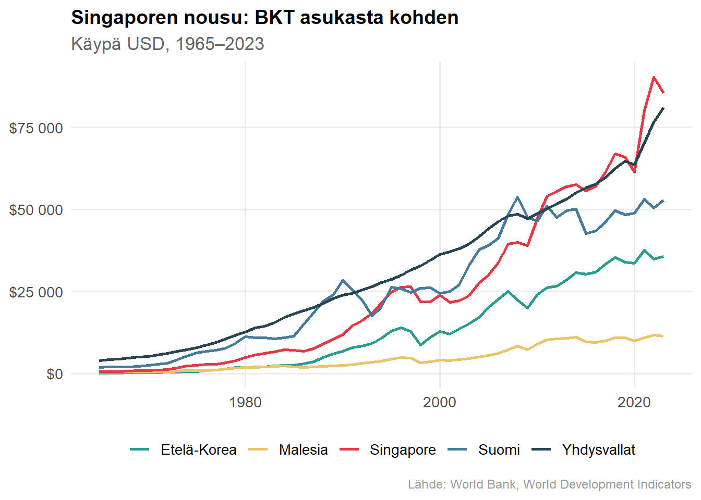
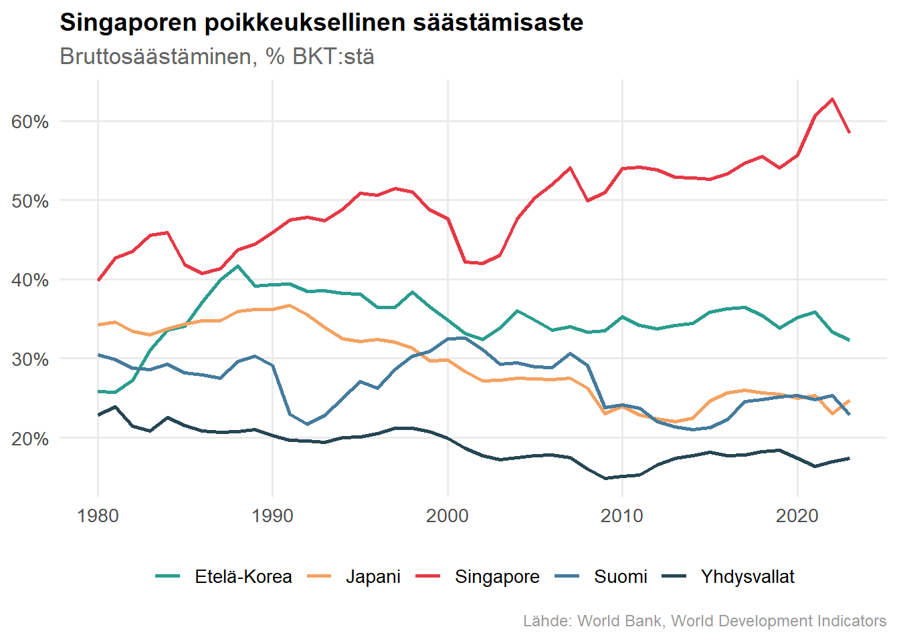
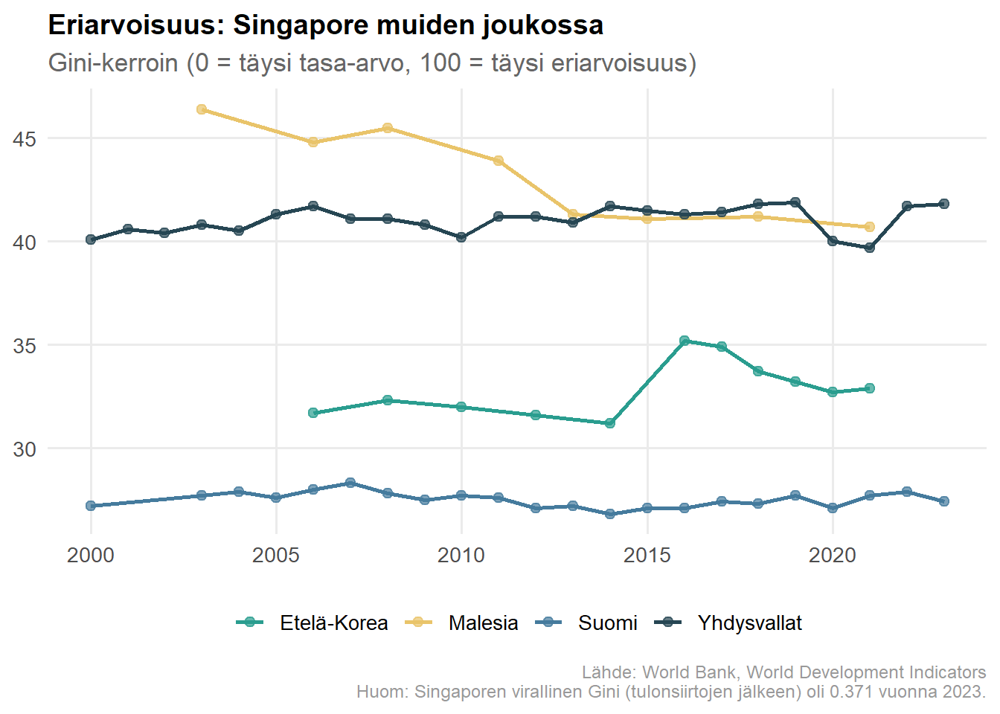

Miten kaupunkivaltio rakensi yhden maailman vauraimmista talouksista — ja mitä se maksoi
taloustiede
kehitystalous
Singapore
Tekijä
Vesa
Julkaistu
21. helmikuuta 2026
Johdanto
Singapore on poikkeus. Pieni kaupunkivaltio ilman luonnonvaroja, joka itsenäistyi vuonna 1965 keskellä poliittista kaaosta — ja jonka BKT asukasta kohden ohitti vuosikymmenten kuluessa lähes kaikki teollisuusmaat. Taloustieteilijöille Singapore on yhtä aikaa inspiroiva ja häiritsevä tapaus: se rikkoo siistejä kategorioita. Se ei ole libertaarinen unelma, muttei myöskään pohjoismainen hyvinvointivaltio. Se on jotain kolmatta — kurinalainen, pragmaattinen selviytymiskone, joka on optimoinut instituutionsa pitkäjänteisen kasvun palvelukseen.
Tässä kirjoituksessa käyn läpi Singaporen talousmallin keskeiset pilarit taloustieteen näkökulmasta: kasvun lähteet, valtion roolin, julkisen talouden rakenteen, eriarvoisuuden ja mallin haavoittuvuudet. Tavoitteena ei ole ihailu eikä kritiikki, vaan ymmärtäminen.
Menestys numeroina
Singaporen tarinaa mitataan usein BKT:n kasvulla, mutta pelkkä tuotannon kasvu ei kerro koko kuvaa. Menestys näkyy mittareissa, jotka koskettavat ihmisten arkea suoremmin.
Elinajanodote syntymähetkellä 83,5 vuotta (2024) on maaiilman korkeimpia. Itsenäisyyden aikaan se oli alle 70 vuotta. Lapsikuolleisuus on pudonnut alle 2,3 kuolemaan tuhatta elävänä syntynyttä kohden, ja lukutaitoaste on käytännössä 100 %. PISA 2022 -tuloksissa Singapore sijoittui ensimmäiseksi kaikissa kolmessa kategoriassa: matematiikka (575), lukutaito (543) ja luonnontieteet (561) OECD-keskiarvojen ollessa noin sata pistettä matalampia. Erityisen merkittävää on, että 41 % singaporelaisista oppilaista ylsi matematiikassa korkeimmalle osaamistasolle, kun OECD-maiden keskiarvo oli 9 %. Koulutusputki tuottaa tulosta myös yliopistoissa: QS World University Rankings 2026 -listauksessa National University of Singapore (NUS) on sijalla 8 ja Nanyang Technological University (NTU) sijalla 12 — molemmat maailman kärkeä ja Aasian huippua. Kuuden miljoonan asukkaan kaupunkivaltiolle kaksi yliopistoa globaalissa top 15:ssä on hämmästyttävä suoritus. Mediaanikotitalouden kuukausitulot nousivat 11 297 Singaporen dollariin vuonna 2024.
Nämä eivät ole pelkkiä tilastoja. Ne kertovat järjestelmästä, joka on onnistunut muuttamaan talouskasvun konkreettiseksi inhimilliseksi kehitykseksi — ainakin niille, jotka järjestelmä laskee omikseen. Tästä rajauksesta lisää myöhemmin.
Instituutiot: “inclusive but disciplined”
Singaporen poliittinen järjestelmä on ollut koko itsenäisyyden ajan yhden puolueen, People’s Action Partyn (PAP), dominoima. Tämä herättää välittömästi kysymyksen: miten autoritaarinen piirre sopii yhteen taloudellisen menestyksen kanssa?
Vastaus löytyy instituutioiden laadusta. Lee Kuan Yew’n kaudella (1959–1990) rakennettiin hallintokoneisto, joka oli poikkeuksellisen kykenevä: korruptionvastainen, vahvasti palkattu virkamieskunta, sopimusoikeutta suojaava oikeusjärjestelmä ja poliittinen rakenne, joka minimoi lyhyen aikavälin populismin. rakennettiin hallintokoneisto, joka oli poikkeuksellisen kykenevä: korruptionvastainen, vahvasti palkattu virkamieskunta, sopimusoikeutta suojaava oikeusjärjestelmä ja poliittinen rakenne, joka minimoi lyhyen aikavälin populismin.
Acemoglun ja Robinsonin instituutioteorian (Why Nations Fail) kehikossa Singapore on kiinnostava hybridi. Poliittisesti se on osin rajoittunut — oppositio kohtaa käytännön esteitä, mediavapaus on rajallinen. Mutta taloudellisesti instituutiot ovat vahvasti inklusiivisia: omistusoikeudet ovat turvatut, sopimukset pitävät, markkinoille pääsy on avointa. Tämä yhdistelmä haastaa yksinkertaisen tulkinnan, jonka mukaan poliittinen ja taloudellinen avoimuus kulkisivat aina käsi kädessä.
Kasvumalli: Solow’sta endogeeniseen kasvuun
Singaporen kasvutarina jakautuu karkeasti kahteen vaiheeseen, jotka vastaavat eri kasvuteorioiden ennusteita.
Näytä koodi
# Haetaan BKT per capita -datagdp_data <-WDI(country =c("SG", "FI", "KR", "MY", "US"),indicator ="NY.GDP.PCAP.CD",start =1965,end =2023) |>rename(gdp_pc = NY.GDP.PCAP.CD) |>mutate(country_fi =case_when( iso2c =="SG"~"Singapore", iso2c =="FI"~"Suomi", iso2c =="KR"~"Etelä-Korea", iso2c =="MY"~"Malesia", iso2c =="US"~"Yhdysvallat" ))ggplot(gdp_data, aes(x = year, y = gdp_pc, color = country_fi)) +geom_line(linewidth =1) +scale_y_continuous(labels =label_dollar(prefix ="$", big.mark =" ")) +scale_color_manual(values =c("Singapore"="#e63946","Suomi"="#457b9d","Etelä-Korea"="#2a9d8f","Malesia"="#e9c46a","Yhdysvallat"="#264653" )) +labs(title ="Singaporen nousu: BKT asukasta kohden",subtitle ="Käypä USD, 1965–2023",x =NULL, y =NULL, color =NULL,caption ="Lähde: World Bank, World Development Indicators" ) +theme(legend.position ="bottom")

Kuva 1: Singaporen BKT asukasta kohden (käypä USD) verrattuna valikoituihin maihin. Lähde: Maailmanpankki (WDI).
Ensimmäinen vaihe: pääomakertymä (1965–1990)
Solow’n kasvumallin mukaisesti Singaporen ensimmäinen kasvuvaihe oli pitkälti pääomakertymää. Investointiaste oli korkea, ulkomaiset suorat investoinnit (FDI) virtasivat maahan, ja työvoima kasvoi nopeasti. Tämä johti nopeaan konvergenssiin: köyhä maa otti rikkaampia kiinni.
Ratkaiseva valinta oli avoimuus. Toisin kuin monet Latinalaisen Amerikan maat, jotka rakensivat protektionistisia tuontikorvausmalleja, Singapore houkutteli aktiivisesti monikansallisia yrityksiä. Valtio ei sulkenut markkinoita, vaan teki niistä houkuttelevammat kuin kilpailijat. Tämä oli tietoinen strategia: pienellä maalla ei ollut varaa eristäytymiseen.
Toinen vaihe: osaaminen ja tuottavuus (1990–)
1990-luvulta eteenpäin pelkkä pääomakertymä ei enää riittänyt. Paul Krugman kirjoitti vuonna 1994 kuuluisan artikkelinsa “The Myth of Asia’s Miracle”, jossa hän väitti Aasian tiikertalouksien kasvun olevan pääasiassa “hikoilua” (perspiration) — pääomaa ja työvoimaa — ilman merkittävää tuottavuuskasvua (inspiration). Singaporessa tämä kritiikki osui osittain oikeaan varhaisemmasta vaiheesta, mutta maa reagoi.
Kasvun painopiste siirtyi kohti kokonaistuottavuutta (TFP): Singapore kehittyi globaaliksi finanssikeskukseksi, logistiikan ja satamatoiminnan huipputehokkuuden maaksi. Koulutuspolitiikka painotti STEM-aloja, ja maa alkoi aktiivisesti rekrytoida kansainvälisiä osaajia. Inhimillinen pääoma, teknologia ja institutionaalinen laatu nousivat fyysisen pääoman rinnalle — ja ohi — kasvun lähteenä.
Valtion rooli: valtiokapitalismi vai markkinatalous?
Singaporea kutsutaan usein vapaaksi markkinataloudeksi, ja useissa talousvapauden indekseissä se sijoittuu kärkeen. Mutta todellisuus on monimutkaisempi. Valtion sijoitusyhtiöt Temasek Holdings ja GIC hallinnoivat massiivisia varoja — satoja miljardeja dollareita. Strategiset sektorit ovat osin valtion omistuksessa. Singapore Airlines, Singtel ja ST Engineering ovat kaikki Temasekin salkussa.
Tämä herättää kolme taloustieteellistä kysymystä. Ensinnäkin: onko valtion omistajuus tehokasta? Toiseksi: syrjäyttääkö se yksityistä pääomaa (crowding out)? Kolmanneksi: parantaako se riskinkantoa pienessä avoimessa taloudessa?
Empiirinen vastaus on yllättävän myönteinen. Singaporen valtionyhtiöt toimivat markkinaehtoisesti, niiden hallinto noudattaa lähes yksityisten yritysten standardeja, ja poliittinen ohjaus on rajattua verrattuna klassisiin valtiokapitalistisiin järjestelmiin — vaikkapa Kiinan tai Venäjän valtionyhtiöihin. Klassista crowding out -ilmiötä on vaikea havaita: valtionyhtiöt näyttävät ennemmin täydentävän kuin syrjäyttävän yksityistä sektoria.
Singapore osoittaa, että valtiokapitalismi ja markkinatehokkuus eivät ole välttämättä ristiriidassa — kunhan hallinto on kurinalaista ja läpinäkyvää.
Julkinen talous: matalat verot, pakollinen säästäminen
Verotuksen rakenne
Singaporen julkinen sektori on pieni suhteessa BKT:hen, erityisesti verrattuna Pohjoismaihin. Tuloverot ovat suhteellisen matalat (ylin marginaali 22 %), yritysverokanta on kilpailukykyinen 17 %, eikä pääomatuloveroa tai perintöveroa ole lainkaan. Kulutusverotus (GST) on noussut asteittain 3 prosentista 9 prosenttiin vuoteen 2024 mennessä.
Tämä matalien verojen malli ei kuitenkaan tarkoita, ettei valtio ohjaisi taloutta. Se tekee sen eri välinein.
CPF: pakollinen säästämisjärjestelmä
Central Provident Fund (CPF) on Singaporen koko talousjärjestelmän selkäranka. Alle 55-vuotiaat työntekijät ja työnantajat maksavat yhteensä 37 % palkasta CPF-tilille, joka jakautuu eläke-, terveys- ja yleistiliin. Tämä ei ole vero — rahat ovat muodollisesti työntekijän omia — mutta käytännössä se toimii kuin pakollinen säästöohjelma.
Näytä koodi
savings_data <-WDI(country =c("SG", "FI", "KR", "US", "JP"),indicator ="NY.GDS.TOTL.ZS",start =1980,end =2023) |>rename(savings = NY.GDS.TOTL.ZS) |>mutate(country_fi =case_when( iso2c =="SG"~"Singapore", iso2c =="FI"~"Suomi", iso2c =="KR"~"Etelä-Korea", iso2c =="US"~"Yhdysvallat", iso2c =="JP"~"Japani" ))ggplot(savings_data, aes(x = year, y = savings, color = country_fi)) +geom_line(linewidth =1) +scale_y_continuous(labels =label_percent(scale =1)) +scale_color_manual(values =c("Singapore"="#e63946","Suomi"="#457b9d","Etelä-Korea"="#2a9d8f","Yhdysvallat"="#264653","Japani"="#f4a261" )) +labs(title ="Singaporen poikkeuksellinen säästämisaste",subtitle ="Bruttosäästäminen, % BKT:stä",x =NULL, y =NULL, color =NULL,caption ="Lähde: World Bank, World Development Indicators" ) +theme(legend.position ="bottom")

Kuva 2: Bruttosäästämisaste (% BKT:stä) Singaporessa ja vertailumaissa. Lähde: Maailmanpankki.
Makrotaloudellinen vaikutus on merkittävä: korkea kansallinen säästämisaste, suuri investointikapasiteetti ja pienempi julkinen eläkevastuu kuin vertailumaissa. CPF vähentää klassisen hyvinvointivaltion budjettipainetta siirtämällä vastuun yksilölle — mutta pakollisena ja rakenteeltaan se on lopulta kollektiivinen järjestelmä.
HDB: asuntopolitiikka varallisuuspolitiikkana
Housing & Development Board (HDB) on paljon enemmän kuin asuntopolitiikkaa. Se on varallisuuden rakentamisen väline, sosiaalisen vakauden ankkuri ja säästämisen ohjausmekanismi samassa paketissa. Noin 80 % Singaporen asukkaista asuu HDB-asunnoissa, ja CPF-säästöjä käytetään niiden rahoittamiseen.
Taloustieteellisesti tämä on nerokasta. HDB-järjestelmä lisää kotitalouksien nettovarallisuutta, vähentää poliittista radikalisaatiota (asunnonomistaja on taipuvaisempi säilyttämään status quon) ja sitouttaa kansalaiset järjestelmään konkreettisesti. Asuntovarallisuudesta tulee mekanismi, jolla kansalaiset hyötyvät talouskasvusta myös ilman laajoja tulonsiirtoja.
Samalla järjestelmä on herkkä. Asuntomarkkinoiden likviditeetti on säädeltyä, ja hintatason ylläpito on poliittisesti kriittistä. Jos HDB-asuntojen arvo laskisi merkittävästi, se ei olisi pelkästään taloudellinen vaan legitimiteettiongelma.
Maahanmuutto ja kaksoistyömarkkinat
Singapore käyttää aktiivista työperäistä maahanmuuttoa talouden joustavuuden välineenä. Järjestelmä on kaksijakoinen: korkean osaamisen virrat tuovat finanssi-, teknologia- ja tutkimusalan ammattilaisia, kun taas matalapalkkaiset vierastyöläiset tekevät rakennus-, siivous- ja hoivatyötä.
Makrotaloudellisesti tämä pitää palkkainflaation kurissa, nostaa potentiaalista BKT:tä ja lisää talouden joustavuutta suhdannevaihteluissa. Mutta se myös luo kaksoistyömarkkinan, jossa oikeudet ja palkkatasot eroavat dramaattisesti kansalaisuuden perusteella.
Katukuvassa tämä näkyy välittömästi. Bangladeshilaiset ja intialaiset rakennustyöläiset asuvat teollisuusalueiden asuntoloissa — tarkoitukseen rakennetuissa betonitorneissa, varastoista muunnetuissa majoitustiloissa tai työmaiden väliaikaisparakeissa — ja kulkevat työmaalle kuorma-autojen lavoilla. Muutaman kilometrin päässä CBD:n pilvenpiirtäjissä työskentelevät toisenlaiset “vierastyöläiset” — lontoolaiset pankkiirit ja sanfranciscolaiset ohjelmistokehittäjät — joiden Employment Pass avaa tien pysyvään oleskelulupaan ja lopulta kansalaisuuteen. Molemmat ovat siirtotyöläisiä. Heidän Singaporensa eivät ole sama maa. Eriarvoisuus ei ole järjestelmän virhe, vaan sen ominaisuus.
Eriarvoisuus: kasvua ensin, uudelleenjakoa ehkä myöhemmin
Näytä koodi
# Singaporen viralliset Gini-luvut (ennen tulonsiirtoja, työssäkäyvät kotitaloudet)sg_gini <-tibble(year =2000:2023,gini =c(44.2, 45.4, 45.4, 45.3, 45.6, 46.8, 47.0, 47.2, 47.4, 47.1,47.2, 47.3, 47.3, 46.3, 46.4, 46.3, 45.8, 45.9, 45.8, 45.2,45.2, 44.4, 43.7, 43.3),country_fi ="Singapore")gini_data <-WDI(country =c("FI", "KR", "US", "MY"),indicator ="SI.POV.GINI",start =2000, end =2023) |>rename(gini = SI.POV.GINI) |>filter(!is.na(gini)) |>mutate(country_fi =case_when( iso2c =="FI"~"Suomi", iso2c =="KR"~"Etelä-Korea", iso2c =="US"~"Yhdysvallat", iso2c =="MY"~"Malesia" )) |>select(year, gini, country_fi) |>bind_rows(sg_gini)ggplot(gini_data, aes(x = year, y = gini, color = country_fi)) +geom_line(linewidth =1) +geom_point(size =2, alpha =0.7) +scale_color_manual(values =c("Singapore"="#e63946","Suomi"="#457b9d","Etelä-Korea"="#2a9d8f","Yhdysvallat"="#264653","Malesia"="#e9c46a" )) +labs(title ="Eriarvoisuus: Singapore muiden joukossa",subtitle ="Gini-kerroin (0 = täysi tasa-arvo, 100 = täysi eriarvoisuus)",x =NULL, y =NULL, color =NULL,caption ="Lähteet: World Bank (WDI); Singapore Department of Statistics\nHuom: Singaporen luvut ennen tulonsiirtoja. Tulonsiirtojen jälkeen 0.371 (2023)." ) +theme(legend.position ="bottom")

Kuva 3: Gini-kerroin Singaporessa ja vertailumaissa. Lähteet: Maailmanpankki (WDI), Singapore Department of Statistics.
Singaporen markkinatulojen Gini-kerroin on korkea — vuonna 2024 se oli 0.435 ennen tulonsiirtoja. Verojen ja tulonsiirtojen jälkeen luku putoaa merkittävästi (0.364 vuonna 2024, ennätysalhainen), mutta ei pohjoismaisten maiden tasolle.
Keskeinen kysymys on: onko hyvinvointi saavutettu kasvun kautta vai uudelleenjaon kautta? Singapore painottaa selvästi ensin mainittua. Universaaleja, laajoja tulonsiirtojärjestelmiä ei ole — sen sijaan tuki kohdistetaan heikoimmille. Filosofia on selkeä: kasvatetaan kakkua ensin, jaetaan kohdennettuja paloja sitten.
Avoimuus ja haavoittuvuus
Näytä koodi
trade_data <-WDI(country =c("SG", "FI", "KR", "US"),indicator ="NE.TRD.GNFS.ZS",start =1965,end =2023) |>rename(trade = NE.TRD.GNFS.ZS) |>mutate(country_fi =case_when( iso2c =="SG"~"Singapore", iso2c =="FI"~"Suomi", iso2c =="KR"~"Etelä-Korea", iso2c =="US"~"Yhdysvallat" ))ggplot(trade_data, aes(x = year, y = trade, color = country_fi)) +geom_line(linewidth =1) +scale_y_continuous(labels =label_percent(scale =1)) +scale_color_manual(values =c("Singapore"="#e63946","Suomi"="#457b9d","Etelä-Korea"="#2a9d8f","Yhdysvallat"="#264653" )) +labs(title ="Singaporen äärimmäinen avoimuus",subtitle ="Kauppa (vienti + tuonti), % BKT:stä",x =NULL, y =NULL, color =NULL,caption ="Lähde: World Bank, World Development Indicators" ) +theme(legend.position ="bottom")
Kuva 4: Kaupan avoimuus (vienti + tuonti, % BKT:stä). Singaporen poikkeuksellinen riippuvuus ulkomaankaupasta. Lähde: Maailmanpankki.
Singaporen kauppa suhteessa BKT:hen ylittää 300 prosenttia. Luku tekee maasta yhden maailman avoimimmista talouksista. Tämä on sekä voima että haavoittuvuus.
Kolme keskeistä riskiä nousevat esiin. Ensinnäkin ulkoinen riippuvuus: Singaporen talous on täysin sidottu globaaliin kauppajärjestelmään, ja geopoliittinen tasapainoilu Kiinan ja Yhdysvaltojen välillä on jatkuva jännite. Toiseksi väestörakenne: ikääntyminen on nopeaa, ja maa on pysyvästi riippuvainen maahanmuutosta työvoiman ylläpitämiseksi. Kolmanneksi poliittisen legitimaation perusta: kun taloudellinen menestys on koko järjestelmän oikeutus, hitaampi kasvu muuttuu välittömästi poliittiseksi paineeksi.
Teoreettinen tulkinta
Singaporea voi tarkastella usean erilaisen taloustieteen linssin läpi. Se on Solow-konvergenssin onnistunut tapaus: köyhä maa, joka otti rikkaat kiinni pääomakertymällä ja avoimuudella. Se on endogeenisen kasvun mallin esimerkki: inhimillinen pääoma ja instituutiot selittävät siirtymän pelkästä “hikoilusta” tuottavuusvetoiseen kasvuun. Se on pienen avoimen talouden optimaalinen riskinhallintarakenne, jossa valtiolliset puskurit (GIC, Temasek) suojaavat maailmantalouden shokeilta. Ja se on osoitus siitä, että valtiokapitalismi ei välttämättä tarkoita tehottomuutta, kun kurinalaisuus on rakennettu sisään järjestelmään.
Mutta ehkä kiinnostavin tulkinta on yksinkertaisin: Singapore osoittaa, että instituutiot ovat tärkeämpiä kuin ideologia. Markkinatalous toimii, kun instituutiot ovat vahvat. Valtio voi olla aktiivinen ilman että se on tehoton. Ja pitkäjänteisyys on merkittävä kilpailuetu.
Lee Kuan Yew tiivisti tämän ajattelutavan suorasukaisesti: “We are pragmatists. We don’t stick to any ideology. Does it work? Let’s try it, and if it does work, fine, let’s continue it. If it doesn’t work, toss it out, try another one.” Toisaalla hän totesi: “If you do not know history, you think short term.” Nämä kaksi lausetta yhdessä kiteyttävät Singaporen mallin ytimen: pragmaattinen kokeilu yhdistettynä pitkän aikavälin perspektiiviin. Siinä missä demokraattisissa järjestelmissä vaalikausien rytmi ohjaa päätöksentekoa kohti nopeita tuloksia, Singapore on voinut — poliittisten vapauksiensa kustannuksella — optimoida vuosikymmenten, ei vuosien, aikajänteelle.
Johtopäätös: tehokas selviytymiskone — mutta kenen ehdoilla?
Singapore on taloudellinen menestystarina, jota on vaikea kiistää. Mutta se ei ole malli, jota voi kopioida tai johon voi kritiikittömästi ihastua. Poliittinen pluralismi on rajallinen. Eriarvoisuus on rakenteellista. Vierastyöläisten asema nostaa eettisiä kysymyksiä. Ja malli — rakennettu maantieteellisesti ja väestöllisesti ainutlaatuiselle kaupunkivaltiolle — ei ole siirrettävissä suurempiin, monimutkaisempiin valtioihin.
Mutta yksi oppi on universaali: instituutioiden laatu ratkaisee. Ei se, onko valtio iso vai pieni, vaan se, onko se kykenevä ja kurinalainen. Singapore on tämän periaatteen äärimmäinen ilmentymä — tehokas selviytymiskone, joka on optimoinut itsensä maailman epävarmuuksia vastaan.